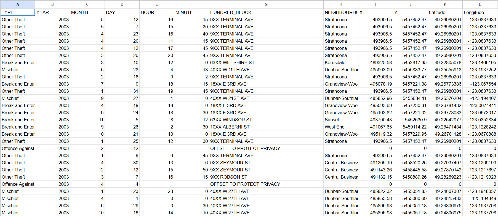
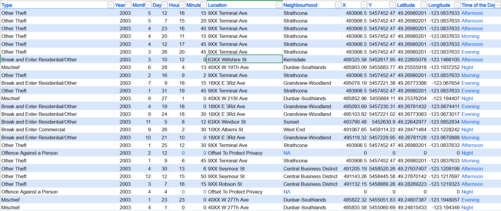
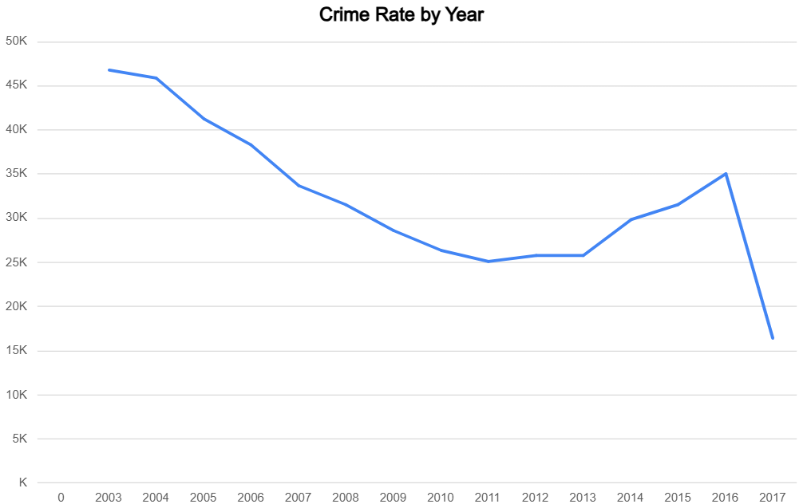
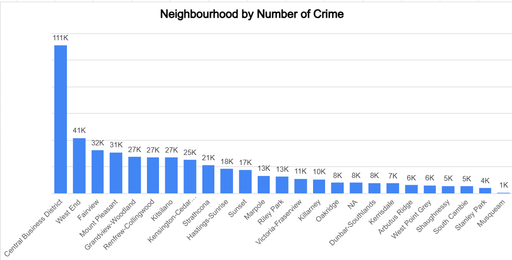
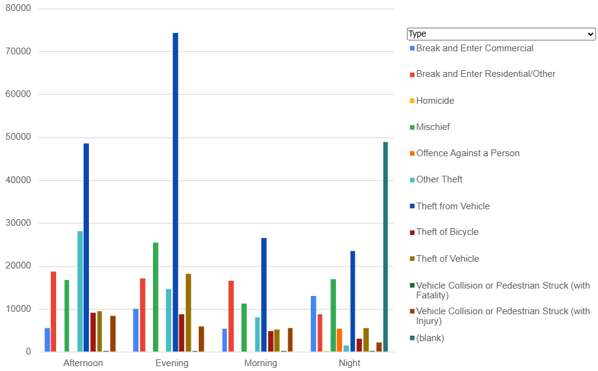
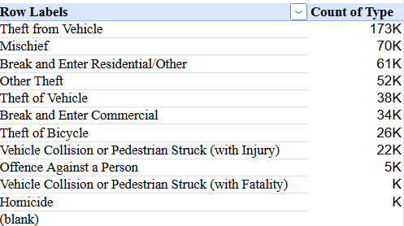

Vancouver Incident Data Analysis in Excel
Objective
The objective of this project was to analyze public safety incident data in Vancouver to identify trends in crime types, neighborhood patterns, and temporal patterns (e.g., by month and weekday). The analysis involved data cleaning, the creation of pivot tables, and visualizations to gain insight into the distribution and frequency of incidents across the city.
Data Cleaning Process
Before
After
- Unnecessary Columns Removed: Geolocation (Latitude, Longitude), redundant IDs, and other unused fields were removed.
- Date and Time Formatting: Reformatted into Excel’s standard formats to enable grouping by month and weekday.
- Blank Values Handling: Filled or excluded rows with missing key info like Type or Neighbourhood.
- Standardized Text Fields: Applied PROPER() to prevent duplicate category issues.
- Duplicate Entries Check: Used Excel’s Remove Duplicates to avoid double-counting.
Pivot Table Analysis
Crime Rate by Year
From 2003 to 2011, crime declined consistently, followed by a rise between 2012 and 2016, and then a sharp drop in 2017, possibly due to missing data.
Top 5 Neighbourhoods by Crimes

The Central Business District reports the highest crime, followed by Fairview, Grandview-Woodland, Mount Pleasant, and the West End. These areas experience high property crime levels.
Neighbourhood by Number of Crimes
Crime is concentrated in specific neighborhoods, especially the Central Business District. After the top 5, incidents drop significantly.
Crimes by Time of Day
Evening is the riskiest period for crimes, particularly theft and mischief. Mornings show the least incidents.
Crime Type Distribution
Theft from vehicles is the most common crime, followed by mischief and break-ins. Violent crimes remain rare.
Business Metrics & Insights
- Year-over-Year Crime Trends: Decline from 2003 to 2011, increase from 2012–2016, sharp drop in 2017.
- High-Crime Neighborhoods: Central Business District, Fairview, Grandview-Woodland are hotspots.
- Crime Time Analysis: Most crimes occur in the evening, followed by afternoons and nights.
- Type of Crime: Property crimes dominate; violent crimes are minimal.
Recommendations
- Increase patrols in high-crime areas during evening hours.
- Launch neighborhood-specific “Crime Watch” initiatives.
- Use data insights for better urban planning: lighting, cameras, zoning.
- Run theft-prevention campaigns, especially for vehicles.